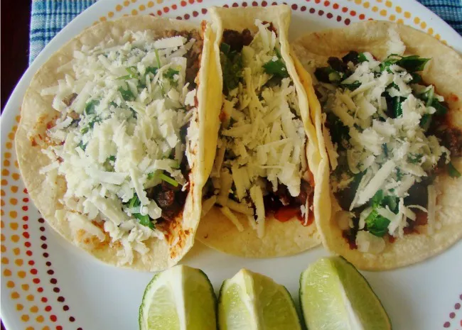

Tacos

Craving Tacos?
Imagine biting into a warm, soft tortilla filled with savory ground beef,
bursting with flavor from a blend of spices. Top it off with a creamy dollop
of guacamole, a sprinkle of zesty salsa, and a crunch of shredded cheese. The
perfect combination of textures and tastes will leave you wanting more.
Ingredients
- 1 pound ground beef
- 1 packet taco seasoning
- 1 cup water
- 1 tablespoon water
- 1 dozen corn tortillas
-
Your favorite toppings (e.g., shredded cheese, lettuce, tomatoes, onions,
salsa, guacamole)
How to cook it
-
Cook the beef: Heat olive oil in a large skillet over medium heat. Add
ground beef and cook until browned. Drain any excess grease.
-
Season: Stir in taco seasoning and water. Bring to a simmer and cook for 5-7
minutes, or until the flavors have combined.
-
Assemble: Warm the tortillas according to package directions. Spoon the
seasoned beef into each tortilla. Top with your desired toppings and enjoy!
Back to list!